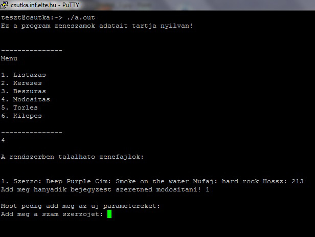

Nézzük meg a gyakorlatban, hogy hogyan használnánk az előzőleg megismert alacsony szintű függvényeket egyszerű feladatok megoldásában!
Legyen az első feladatunk az, hogy olvassuk be egy fájl tartalmát!A fájlból olvasáshoz meg kell nyitni a fájlt olvasásra. A megnyitás nem biztos, hogy sikeres, így a nyitási hibára is figyelni kell. Az előzőekben megismert módon tudjuk, hogy hiba esetén a hiba kódja az errno változóba kerül, és a standard hibakimenetre a perror függvénnyel írhatunk. Ha megnyitunk egy fájlt olvasásra, akkor az aktuális pozíciója az első bájtra kerül. Egy ciklussal olvassuk be a fájl tartalmát, és egyesével írassuk ki a fájlból kiolvasott karaktereket a képernyőre. A beolvasás visszaadott értéke a beolvasott bájtok száma. Ha hibás a beolvasás, akkor visszatérési értékként -1-et kapunk. Ezt használjuk ki a ciklus megszervezéséhez. Végezetül zárjuk be az olvasásra megnyitott fájlt!
#include <stdlib.h>
#include <stdio.h>
#include <errno.h> //hibakezeléshez kell
int main(int argc, char* argv[]) {
int f;
char karakter;
char sor[80];
f=open("szoveg.txt",0); //olvasásra nyit meg
if (errno) {
perror("Hiba – ");
exit(0);
};
while(read(f, &karakter, 1)) {
printf("%c", karakter);
};
close(f);
return 0;
}
Vissza a tartalomj egyzékhez
A következő feladat legyen az, hogy az egyik fájl tartalmát másoljuk át egy másikba! A fájlok nevét olvassuk be a billentyűzetről futási időben!
A feladat megoldásához készítsünk függvényeket a beolvasás és a megnyitás megvalósításához! A függvények esetében figyeljünk a paraméterátadásra! A megnyitás függvénynél szükség van arra, hogy a létrejött fájlleírót visszaadjuk a hívónak. Ehhez a C++ programozási nyelvben referenciát alkalmaznánk, de a C programozási nyelvben megismert mutatókkal kell megoldani a feladatot. Olvasásra nyitásnál most külön ellenőrizzük, hogy létezik-e az adott fájl elérési útvonala. Az atmasol függvényben tulajdonképpen felhasználjuk az előző feladat lényegét.
#include <stdlib.h>
#include <stdio.h>
#include <fcntl.h>
#include <unistd.h>
#include <sys/stat.h>
#include <sys/types.h>
#include <errno.h> // A hibakezeléshez kell.
void megnyitas(char* fnev, int* fajlleiro) {
(*fajlleiro)=open(fnev,O_RDONLY);
if(errno != 0) { perror(”Hibás megnyitás!\n”); exit(0); };
}
void kozepreallit(int fajlleiro) {
struct stat status;
int pozicio;
if(fstat(fajlleiro,&statusz)) {
perror("Hibas status olvasas!\n"); exit(0); };
pozicio=(int)((status.st_size)/2);
printf("%i\n", pozicio);
if(!lseek(fajlleiro,pozicio, SEEK_SET)) {
perror("Hibas pozicio beallitas!\n"); exit(0);
};
}
void olvas_ir(int fajlleiro) {
char c;
if(!read(fajlleiro,&c,1)) { perror("Hibas olvasas!\n"); exit(0); };
printf("A kozepso karakter: %c \n",c);
}
int main() {
int f;
megnyitas(inputnev, &f);
kozepreallit(f);
olvas_ir(f);
close(f);
return 0;
}
Vissza a tartalomj egyzékhez
Oldjuk meg azt a problémát, hogy írjuk ki egy állomány közepén lévő bájtot! A feladat megoldásához nyilván meg kell nyitnunk a fájlt, ezután le kell olvasnunk a hosszúságát, majd az aktuális pozíciót a hosszúság felére kell állítani, és onnan olvasni egy bájtot. A fájl megnyitása hasonlóan történhet, mint az előző feladatokban. A fájl hossza a stat vagy fstat függvények által visszaadott stat struktúrából olvasható ki. A fájl aktuális pozíciója pedig az lseek függvénnyel állítható. A bájt olvasása itt is a read függvénnyel valósítható meg.
#include <stdlib.h>
#include <stdio.h>
#include <fcntl.h>
#include <unistd.h>
#include <errno.h> // A hibakezeléshez kell.
void beolvas(char* fnev) {
printf("Kerek egy fajlnevet:");
if(scanf("%s", fnev)==EOF) {
perror("Nem adott meg fajlnevet!\n"); exit(0); };
};
void megnyit(char* fnev, int* fajlleiro, int mire) {
if(mire == O_RDONLY) {
if(access(fnev,F_OK) != 0) {
perror("Nem letezik a fajl!\n"); exit(0);
};
};
(*fajlleiro)=open(fnev,mire);
if(errno != 0) { perror("Hibás megnyitás!\n"); exit(0); };
};
void atmasol(int f, int g) {
char c;
while(read(f,&c,1) {
if(write(g,&c, 1) != 1) { perror("Hibas iras!\n"); exit(0); };
};
};
int main() {
int f, g;
char inputnev[80], outputnev[80];
beolvas(inputnev);
beolvas(outputnev);
megnyit(inputnev, &f, O_RDONLY);
megnyit(outputnev, &g, O_RDONLY|O_WRONLY|O_CREAT);
atmasol(f,g);
close(f);
close(g);
printf("Kesz...");
return 0;
};
Vissza a tartalomj egyzékhez
Az alábbi példaprogram zeneszámok nyilvántartását teszi lehetővé.
#include <stdlib.h>
#include <stdio.h>
struct szamlistaelem {
int szerzo;
char cim[30];
int mufaj;
int hossz;
struct szamlistaelem *next;
};
struct roviditeselem {
int sorsz;
char jelentes[30];
struct roviditeselem *next;
};
struct szamlistaelem *szamok = 0;
struct roviditeselem *roviditesek = 0;
int is_the_same(char a[], char b[]) {
int i;
for (i = 0; i < 30; i++) if (a[i] != b[i]) return 0;
return 1;
}
char* dekod(int mit) {
struct roviditeselem *seged = roviditesek;
if (seged != 0) {
while ((seged->next != 0) && (seged->sorsz != mit)) seged = seged->next;
return seged->jelentes;
}
return "Proba";
}
void addrovidites(char jelentes[], int sorsz) {
struct roviditeselem *elem;
elem = malloc( sizeof(struct roviditeselem) );
elem->next = roviditesek;
elem->sorsz = sorsz;
int i;
for (i = 0; i < 30; i++) elem->jelentes[i] = jelentes[i];
roviditesek = elem;
}
int ujrovidites(char mit[]) {
int i;
int sorsz;
int l = 0;
struct roviditeselem *seged = roviditesek;
struct roviditeselem *elozo = roviditesek;
if (seged != 0) {
while ((seged->next != 0) && (l == 0)) {
l = 1;
for (i = 0; i < 30; i++) if (seged->jelentes[i] != mit[i]) l = 0;
elozo = seged;
seged = seged->next;
}
if (l == 1) return elozo->sorsz;
}
if (roviditesek == 0) sorsz = 1;
else sorsz = roviditesek->sorsz + 1;
addrovidites(mit, sorsz);
return sorsz;
}
//Listázás:
void listazas() {
printf("\nA rendszerben talalhato zenefajlok:\n\n");
struct szamlistaelem *seged = szamok;
if (seged != 0) {
int i = 1;
do {
printf("\n%d. ", i);
printf("Szerzo: %s", dekod(seged->szerzo));
printf(" Cim: %s", seged->cim);
printf(" Mufaj: %s", dekod(seged->mufaj));
printf(" Hossz: %d", seged->hossz);
i++;
seged = seged->next;
} while (seged != 0);
}
else printf("Ures lista \n");
}
void addelem(char szerzo[], char cim[], char mufaj[], int hossz) {
int i;
struct szamlistaelem *elem;
elem = malloc( sizeof(struct szamlistaelem) );
elem->next = szamok;
elem->szerzo = ujrovidites(szerzo);
for (i = 0; i < 30; i++) elem->cim[i] = cim[i];
elem->mufaj = ujrovidites(mufaj);
elem->hossz = hossz;
szamok = elem;
}
//Beszúrás:
void beszuras() {
char szerzo[30];
char cim[30];
char mufaj[30];
int hossz; //mp
printf("\nSzam beszurasa:\n");
printf("Add meg a szam szerzojet:");
scanf("%[^\n]s", szerzo);
getchar();
printf("\nAdd meg a szam cimet:\n");
scanf("%[^\n]s", &cim);
getchar();
printf("\nAdd meg a szam mufajat:\n");
scanf("%[^\n]s", &mufaj);
getchar();
printf("\nAdd meg a szam hosszat (masodpercben):\n");
scanf("%d", &hossz);
getchar();
addelem(szerzo, cim, mufaj, hossz);
printf("\nA bejegyzes beszurva!\n");
}
//Keresés:
void kereses() {
char cim[30];
printf("\nAdd meg a szam cimet:\n");
scanf("%[^\n]s", &cim);
getchar();
printf("\nA rendszerben talalhato ilyen cimu zenefajlok:\n\n");
struct szamlistaelem *seged = szamok;
int db = 0;
int l = 1;
int i;
if (seged != 0) {
do {
if (is_the_same(cim, seged->cim) == 1) {
printf("Szerzo: %s", dekod(seged->szerzo));
printf(" Cim: %s", seged->cim);
printf(" Mufaj: %s", dekod(seged->mufaj));
printf(" Hossz: %d", seged->hossz);
db++;
}
seged = seged->next;
} while (seged != 0);
}
}
//Módosítás:
void modositas() {
char szerzo[30];
char cim[30];
char mufaj[30];
int hossz; //mp
int melyik;
listazas();
printf("\nAdd meg hanyadik bejegyzest szeretned modositani! ");
scanf("%d", &melyik);
getchar();
printf("\nMost pedig add meg az uj parametereket:\n");
printf("Add meg a szam szerzojet: ");
scanf("%[^\n]s", &szerzo);
getchar();
printf("\nAdd meg a szam cimet: ");
scanf("%[^\n]s", &cim);
getchar();
printf("\nAdd meg a szam mufajat: ");
scanf("%[^\n]s", &mufaj);
getchar();
printf("\nAdd meg a szam hosszat (masodpercben): ");
scanf("%d", &hossz);
getchar();
struct szamlistaelem *seged = szamok;
int i = 1;
while (seged != 0 && i != melyik) {
seged = seged->next;
i++;
}
if (seged == 0) printf("Nincs ilyen sorszamu elem a listaban!\n");
else {
seged->szerzo = ujrovidites(szerzo);
for (i = 0; i < 30; i++) seged->cim[i] = cim[i];
seged->mufaj = ujrovidites(mufaj);
seged->hossz = hossz;
}
printf("\nA bejegyzes modositva!\n");
}
//Törlés:
void torles() {
int melyik;
listazas();
printf("\nAdd meg hanyadik bejegyzest szeretned torolni! ");
scanf("%d", &melyik);
getchar();
struct szamlistaelem *seged = szamok;
struct szamlistaelem *elozo = 0;
int i = 1;
while (seged != 0 && i != melyik) {
elozo = seged;
seged = seged->next;
i++;
}
if (seged == 0) printf("Nincs ilyen sorszamu elem a listaban!\n");
else {
if (elozo == 0) szamok = seged->next;
else elozo->next = seged->next;
free(seged);
}
printf("\nA bejegyzes torolve!\n");
}
//Adatok betöltése
void betoltes() {
if( access("rovidites.bin", 0 ) != -1 ) {
FILE *roviditesfile;
roviditesfile = fopen("rovidites.bin", "r");
if (roviditesfile != NULL) {
struct roviditeselem seged;
while (fread(&seged, sizeof(seged), 1, roviditesfile)) {
addrovidites(seged.jelentes, seged.sorsz);
}
}
fclose(roviditesfile);
if( access("szamlista.bin", 0 ) != -1 ) {
FILE *szamlistafile;
szamlistafile = fopen("szamlista.bin", "rb");
if (szamlistafile != NULL) {
struct szamlistaelem seged2;
while (fread(&seged2, sizeof(seged2), 1, szamlistafile)) {
addelem(dekod(seged2.szerzo), seged2.cim, dekod(seged2.mufaj), seged2.hossz);
}
}
fclose(szamlistafile);
}
}
}
//Adatok kimentése
void mentes() {
FILE *roviditesfile;
roviditesfile = fopen("rovidites.bin", "w");
struct roviditeselem *seged = roviditesek;
while (seged != 0) {
fwrite(seged, sizeof(*seged), 1, roviditesfile);
seged = seged->next;
}
fclose(roviditesfile);
FILE *szamlistafile;
szamlistafile = fopen("szamlista.bin", "w");
struct szamlistaelem *seged2 = szamok;
while (seged2 != 0) {
fwrite(seged2, sizeof(*seged2), 1, szamlistafile);
seged2 = seged2->next;
}
fclose(szamlistafile);
}
int main() {
betoltes();
printf("Ez a program zeneszamok adatait tartja nyilvan!\n");
int vege;
do {
printf("\n\n---------------\nMenu\n\n");
printf("1. Listazas\n");
printf("2. Kereses\n");
printf("3. Beszuras\n");
printf("4. Modositas\n");
printf("5. Torles\n");
printf("6. Kilepes");
printf("\n\n---------------\n");
scanf("%d", &vege);
getchar();
switch (vege) {
case 1:
//Listazas
listazas();
break;
case 2:
//Kereses
kereses();
break;
case 3:
//Beszuras
beszuras();
break;
case 4:
//Modositas
modositas();
break;
case 5:
//Torles
torles();
break;
case 6:
break;
default:
printf("\n\nNem letezo menupont!\n");
break;
}
} while (vege != 6);
mentes();
return 0;
}
Az alábbi ábrákon a program látható futás közben:
A program futás közben
A program futás közben
A program futás közben
A program futás közben
A program futás közben
A program futás közben
Vissza a tartalomj egyzékhez
")
")
")
")